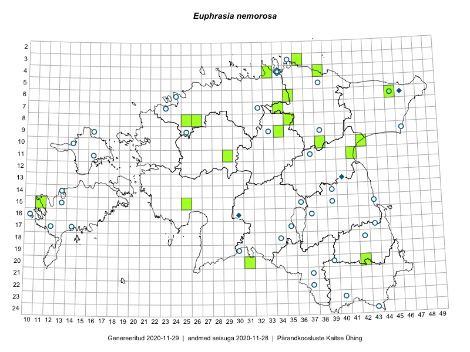

Euphrasia nemorosa
Kaardile koondatud taksonid: Euphrasia nemorosa (Pers.) Wallr. (36)

← Euphrasia micrantha × Euphrasia stricta | tagasi liigiloendi juurde | Euphrasia nemorosa × Euphrasia rostkoviana →
Kaart põhineb 36 kirjel, neist:
vaatlusi 0
eksemplare 36
Kaasaegsed1 leiukohad asuvad 29 ruudus.
Andmed “Eesti taimede levikuatlasest”,2 sulgudes ruutude arv:3
● 1971–2005 (0)
○ 1921–1970 (0)
△ kuni 1920 (0)
+ hävinud (0)
? kaheldav (0)
Lisaruudud teistest andmebaasidest:4
ELF: 2006– . . . (0)
PKÜ: 2006– . . . (0)
ELF: 1971–2005 (0)
PKÜ: 1997–2005 (0)
| Ruut | Vaatleja(d) | Vaatlusaeg | Kirje PlutoFis |
|---|---|---|---|
| 12-16 | Silvia Pihu, Ülle Reier | 2007-06-27 | TU258008: Euphrasia nemorosa (Pers.) Wallr. |
| 18-38 | Silvia Pihu | 2007-09-08 | TU256050: Euphrasia nemorosa (Pers.) Wallr. |
| 17-17 | Silvia Pihu, Helena Sepman, Kaili Orav | 2008-06-13 | TU256048: Euphrasia nemorosa (Pers.) Wallr. |
| 17-43 | Jane Oja | 2008-08-22 | TU256046: Euphrasia nemorosa (Pers.) Wallr. |
| 17-43 | Helena Sepman | 2008-08-27 | TU256043: Euphrasia nemorosa (Pers.) Wallr. |
| 17-43 | Helena Sepman | 2008-08-22 | TU256042: Euphrasia nemorosa (Pers.) Wallr. |
| 17-43 | Helena Sepman | 2008-08-22 | TU256041: Euphrasia nemorosa (Pers.) Wallr. |
| 09-37 | Peedu Saar | 2008-08-25 | TU256040: Euphrasia nemorosa (Pers.) Wallr. |
| 21-44 | Illi Tarmu | 2008-09-05 | TU256023: Euphrasia nemorosa (Pers.) Wallr. |
| 05-31 | Rein Kalamees | 2008-09-25 | TU255992: Euphrasia nemorosa (Pers.) Wallr. |
| 21-45 | Toomas Kukk | 2008-07-13 | TAA0037541: Euphrasia nemorosa (Pers.) Wallr. |
| 08-35 | Jana-Maria Habicht | 2015-07-14 | TAM0117618: Euphrasia nemorosa (Pers.) Wallr. |
| 07-34 | Jana-Maria Habicht | 2015-07-20 | TAM0117620: Euphrasia nemorosa (Pers.) Wallr. |
| 07-34 | Jana-Maria Habicht | 2015-07-20 | TAM0117621: Euphrasia nemorosa (Pers.) Wallr. |
| 09-34 | Jana-Maria Habicht | 2015-07-25 | TAM0117623: Euphrasia nemorosa (Pers.) Wallr. |
| 06-45 | Thea Kull, Eerik Leibak | 2015-07-20 | TAA0116944: Euphrasia nemorosa (Pers.) Wallr. |
| 20-42 | Vivika Väli, Ülo Väli | 2015-07-27 | TAA0132797: Euphrasia nemorosa (Pers.) Wallr. |
| 15-11 | Toomas Kukk | 2015-07-01 | TAA0134371: Euphrasia nemorosa (Pers.) Wallr. |
| 10-42 | Illi Tarmu, Ülle Jõgar, Kai Rünk | 2015-07-29 | TAA0118880: Euphrasia nemorosa (Pers.) Wallr. |
| 19-27 | Ott Luuk | 2016-08-15 | TAA0139245: Euphrasia nemorosa (Pers.) Wallr. |
| 08-26 | Toomas Kukk, Ilmar Uibopuu, Kadri Kuusksalu | 2017-08-08 | TAA0141676: Euphrasia nemorosa (Pers.) Wallr. |
| 10-38 | Ott Luuk, Eerik Leibak | 2016-08-08 | TAA0139257: Euphrasia nemorosa (Pers.) Wallr. |
| 03-36 | Meeli Mesipuu, Liina Oja | 2016-07-26 | TAA0144010: Euphrasia nemorosa (Pers.) Wallr. |
| 20-31 | Meeli Mesipuu, Mari Metsoja | 2016-07-19 | TAA0144176: Euphrasia nemorosa (Pers.) Wallr. |
| 17-43 | Ülo Niinemets | 2017-08-15 | TAA0145508: Euphrasia nemorosa (Pers.) Wallr. |
| 15-25 | Maret Gerz, Leena Gerz | 2015-08-08 | TAA0145516: Euphrasia nemorosa (Pers.) Wallr. |
| 08-25 | Tõnu Ploompuu | 2015-08-17 | TAA0145523: Euphrasia nemorosa (Pers.) Wallr. |
| 14-32 | Toomas Kukk | 2018-08-18 | TAA0146334: Euphrasia nemorosa (Pers.) Wallr. |
| 14-32 | Toomas Kukk | 2018-08-18 | TAA0146335: Euphrasia nemorosa (Pers.) Wallr. |
| 14-29 | Thea Kull, Mari Reitalu | 2019-08-28 | TAA0148143: Euphrasia nemorosa (Pers.) Wallr. |
| 11-29 | Peedu Saar, Ott Luuk | 2019-08-22 | TAA0149022: Euphrasia nemorosa (Pers.) Wallr. |
| 15-32 | Thea Kull, Mari Reitalu | 2019-08-29 | TAA0148074: Euphrasia nemorosa (Pers.) Wallr. |
| 20-46 | Ott Luuk, Tiit Hallikma | 2019-07-10 | TAA0150232: Euphrasia nemorosa (Pers.) Wallr. |
| 04-38 | Ott Luuk, Jaak-Albert Metsoja | 2019-08-06 | TAA0150236: Euphrasia nemorosa (Pers.) Wallr. |
| 04-38 | Ott Luuk, Jaak-Albert Metsoja | 2019-08-06 | TAA0150237: Euphrasia nemorosa (Pers.) Wallr. |
| 04-33 | Ott Luuk, Jaak-Albert Metsoja | 2019-08-07 | TAA0150238: Euphrasia nemorosa (Pers.) Wallr. |
Kaasaegsed leiukohad (tähistatud värvitud ruutudega) põhinevad peamiselt 2014–2019 välitööandmetel. Väiksemal määral on andmebaasi kantud vanemaid leiuandmeid aastatest 2006–2013.↩︎
Kukk, T., Kull, T., Eesti taimede levikuatlas. Eesti Maaülikool, Põllumajandus- ja Keskkonnainstituut, Tartu, 2005.↩︎
NB! 2005. aasta atlase andmestikus katavad uuemad leiud vanemaid. Näiteks kui liik on ruudus registreeritud 1971–2005, siis pole võimalik öelda, kas ta oli sellest ruudust teada ka enne 1970. aastat. Vana atlase andmetel hävinud ja kaheldavaid leiukohti pole hilisemate (taas)leidude põhjal korrigeeritud.↩︎
Eestimaa Looduse Fondi (ELF) ja Pärandkoosluste Kaitse Ühingu (PKÜ) andmebaasid sisaldavad inventeeritud koosluste kirjeldusi ja liigiloendeid. Neist andmekogudest on kaardile lisatud lisatud vaid need ruudud, millest uue atlase andmekogus taksoni kohta kirjeid veel pole. Kõrvale on jäetud teadaolevalt kaheldavad määrangud. Kaartidel katavad uuema perioodi andmed vanemaid, PKÜ omad ELFi omi. Kattumise tõttu võib kaardil näha olla vähem mingi kategooria ruute kui legendis olev arv näitab. ELFi ja PKÜ andmed ei kajastu hetkel vaatluste tabelis ega ruutude liigiloendites.↩︎